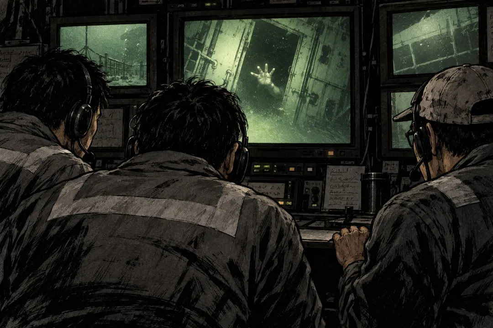

시신 수습하러 내려간 잠수부, 시신인 줄 알았던 손이 그 손을 잡았음. 수심 30m 뒤집힌 배 안에서 60시간 버틴 요리사
2013년 5월 28일, 나이지리아 앞바다.
바다 위 작업선 모니터에는 잠수부 헬멧에 달린 카메라 영상이 흘러나오고 있었음. 수심 30m 바닥에 거꾸로 뒤집혀 가라앉은 배 안쪽.
이틀 전 이 배가 뒤집혔고, 선원들이 안에 갇혔음. 잠수부들은 시신을 수습하러 내려간 거였음. 이미 4명을 찾아 올렸고, 가족들에게는 생존자가 없다는 통보가 간 상태였음.
그때 화면 구석, 어두운 물속에서 손 하나가 비침.
잠수부가 시신을 꺼내려고 그 손을 잡았음.
그런데 그 손이 잠수부의 손을 맞잡았음.

좋아요 874
댓글 38
리포스트 24
공유 0